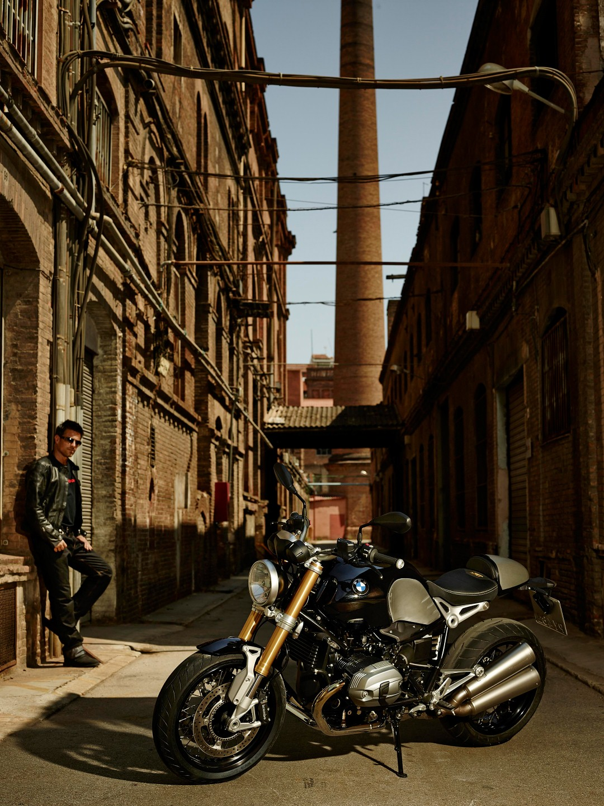

Ar leidžiama vilkti motociklą su šonine priekaba? - KET Bilietai Testai
 Prisijungti 0 Krepšelis Pradžia KET Bilietai Testai Vairuotojai mėgėjai KET Bilietai – A, A1, AM KET Bilietai – A, B KET Bilietai – B, B1 KET Bilietai – BE KET Bilietai – Vaikams Vairuotojai profesionalai KET Bilietai – C, C1 KET Bilietai – C, CE KET Bilietai – D, D1 KET Bilietai – D, DE KET Bilietai Instruktoriams Naudinga informacija KET Kelių eismo taisyklės KET Leistinas važiavimo greitis KET Reguliuotojo signalai KET Minimalus vairuotojų amžius KET – Pažeidimai ir nuobaudos KET Gestų kalba KET Naujienos KET Forumas Apie mus Kontaktai DUK Menu Facebook Youtube Instagram Esate: Pradžia / Forumas / Teorijos egzamino klausimai A kategorija / Ar leidžiama vilkti motociklą su šonine priekaba?
Žymos: Specifiniai kategorijos klausimai
Rodomi 2 įrašai - nuo 1 iki 2 (viso: 2) Autorius Įrašai 2017-10-27 @ 15:50 #4799 Reply KET Pagalba KeymasterAr leidžiama vilkti motociklą su šonine priekaba?
Leidžiama Leidžiama tik standžiąja vilktimi Leidžiama tik lanksčiąja vilktimi Draudžiama 2017-10-30 @ 11:48 #4856 Reply KET Pagalba Keymaster 217. Vilkti draudžiama:
217.7. motociklais be priekabos ir tokius motociklus;
Nuoroda į 217.
Autorius Įrašai Rodomi 2 įrašai - nuo 1 iki 2 (viso: 2)Naujausi atsakymai
Andreyvtt apie Prieš pat pėsčiųjų perėją: prieš 12 hours 56 minutes Andreyocv apie Kiek galioja ‘B’ kategorijos vairuotojo pažymėjimas, kuris išduotas pirmą kartą? prieš 3 days Albert apie Kurio automobilio vairuotojas privalo duoti kelią šioje situacijoje? prieš 1 week 3 days mindaugas apie Kuriems automobiliais draudžiama sustoti šiais kelio ženklais pažymėtame kelio ruože? prieš 2 weeks mindaugas apie Kurio automobilio vairuotojas sustojo pažeisdamas Kelių eismo taisykles? Šiandien spalio mėn. 2d.: prieš 2 weeks vardas apie Kodėl keleiviams pavojinga važiuoti ant galinės sėdynės neprisisegus automobilio saugos diržų? prieš 3 weeks 2 days Mantas apie Dėl kokių priežasčių, reikia laikytis didesnio atstumo iki priekyje važiuojančio automobilio, šioje situacijoje? prieš 3 weeks 2 days Nesuprantantiems apie Kurio automobilio vairuotojas privalo duoti kelią šioje situacijoje? prieš 3 weeks 6 days svanys.darius apie Kurio automobilio vairuotojas privalo duoti kelią šioje situacijoje? prieš 1 monthForumo statistika
Registruoti vartotojai 1 472 Forumai 13 Temos 501 Atsakymai 730 Temų žymos 21 KET Bilietai ir Testai.Online atnaujinti 2020-08-31 10:45 Facebook Youtube Instagram Privatumo politika Slapukų politika Atsakomybė Autorinės teisės Problemos Taisyklės Scroll to topInformuojame, kad šioje svetainėje naudojami slapukai (angl. cookies). Sutikdami, paspauskite mygtuką „Sutinku“.
Sutinku Skaityti daugiauCookie and Privacy Settings
How we use cookies
We may request cookies to be set on your device. We use cookies to let us know when you visit our websites, how you interact with us, to enrich your user experience, and to customize your relationship with our website.
Click on the different category headings to find out more. You can also change some of your preferences. Note that blocking some types of cookies may impact your experience on our websites and the services we are able to offer.
Essential Website CookiesThese cookies are strictly necessary to provide you with services available through our website and to use some of its features.
Because these cookies are strictly necessary to deliver the website, refuseing them will have impact how our site functions. You always can block or delete cookies by changing your browser settings and force blocking all cookies on this website. But this will always prompt you to accept/refuse cookies when revisiting our site.
We fully respect if you want to refuse cookies but to avoid asking you again and again kindly allow us to store a cookie for that. You are free to opt out any time or opt in for other cookies to get a better experience. If you refuse cookies we will remove all set cookies in our domain.
We provide you with a list of stored cookies on your computer in our domain so you can check what we stored. Due to security reasons we are not able to show or modify cookies from other domains. You can check these in your browser security settings.
Check to enable permanent hiding of message bar and refuse all cookies if you do not opt in. We need 2 cookies to store this setting. Otherwise you will be prompted again when opening a new browser window or new a tab. Click to enable/disable essential site cookies. Google Analytics CookiesThese cookies collect information that is used either in aggregate form to help us understand how our website is being used or how effective our marketing campaigns are, or to help us customize our website and application for you in order to enhance your experience.
If you do not want that we track your visist to our site you can disable tracking in your browser here:
Click to enable/disable Google Analytics tracking.
We also use different external services like Google Webfonts, Google Maps, and external Video providers. Since these providers may collect personal data like your IP address we allow you to block them here. Please be aware that this might heavily reduce the functionality and appearance of our site. Changes will take effect once you reload the page.
Google Webfont Settings:
Click to enable/disable Google Webfonts.
Google Map Settings:
Click to enable/disable Google Maps. Google reCaptcha Settings:
Click to enable/disable Google reCaptcha.
Vimeo and Youtube video embeds:
Click to enable/disable video embeds.
You can read about our cookies and privacy settings in detail on our Privacy Policy Page.
Privatumo politika Išsaugoti nustatymus Paslėpti šį langą